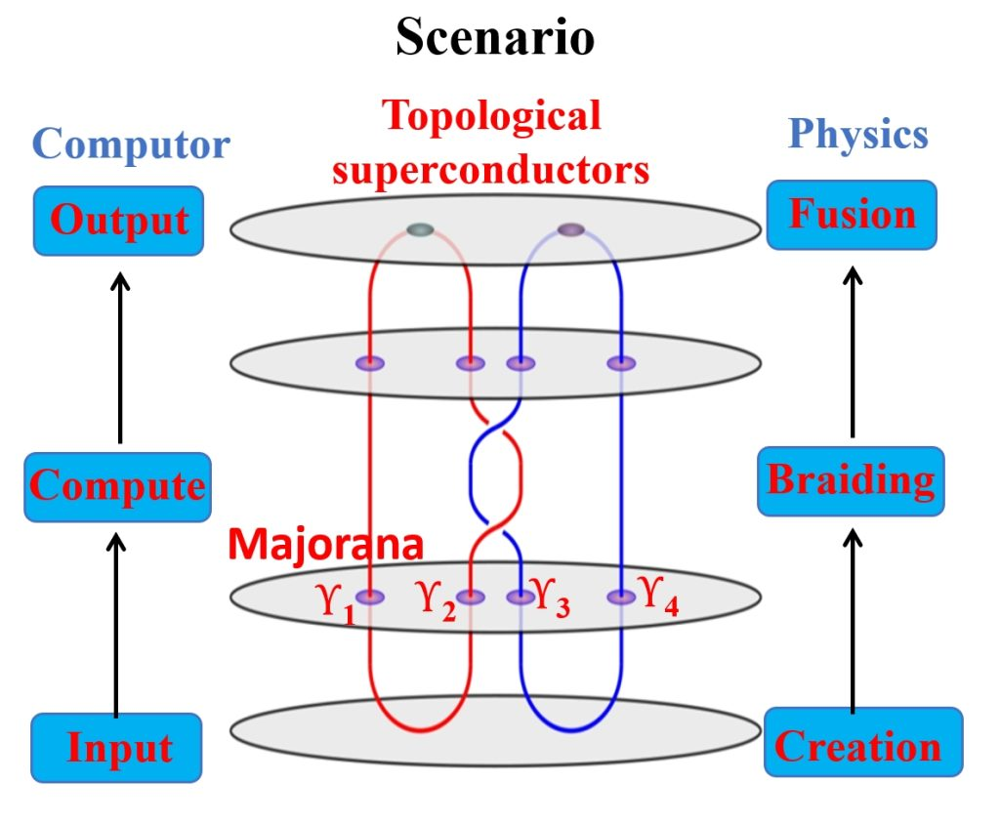
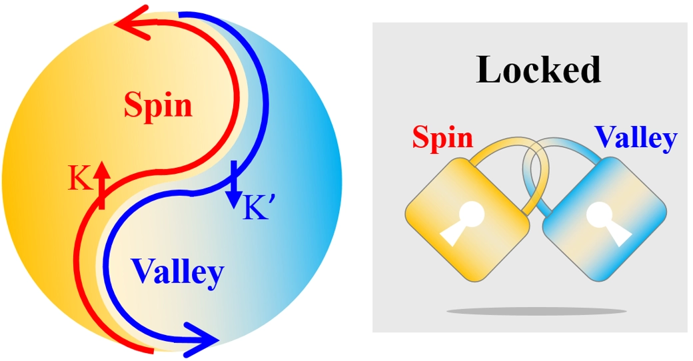
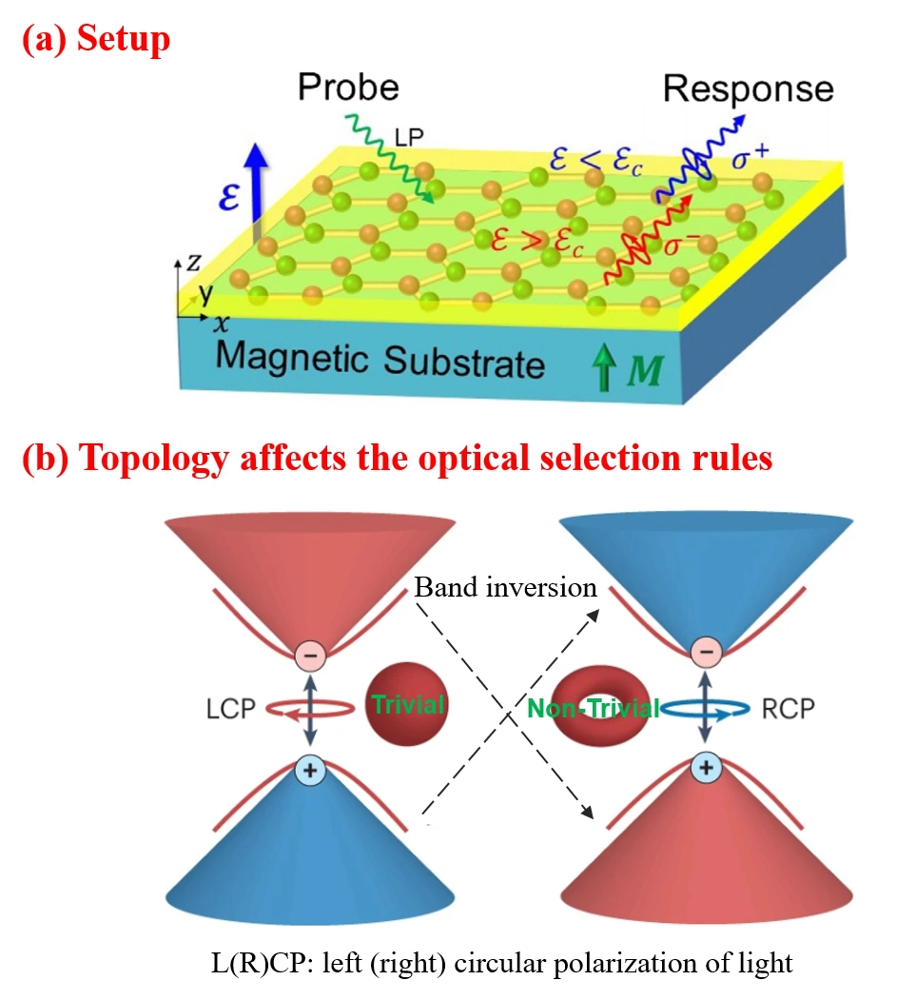
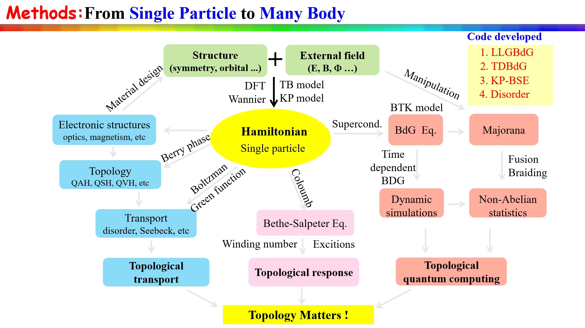

Topics
1. Topological Quantum Computing
Designing platforms and strategies towards topological quantum computing by demonstrating non-Abelian statistics through Majorana fusion and braiding.

2. Topological Transport
Quantum states in topological insulators, semimetals, and superconductors, along with their interactions with external fields, such as forces, heat, light, electricity, magnetism, etc. Quantum transport behavior in the superconductor-semiconductor interface, such as Andreev reflection, Josephson effect, superconducting diode effect, etc.

3. Topological Response
The intriguing properties of quantum materials, such as novel electronic structure, superconductivity, magnetoelectricity, optics, transport, etc. It also involves the design and prediction of materials with specific functionalities.

Methods Development
